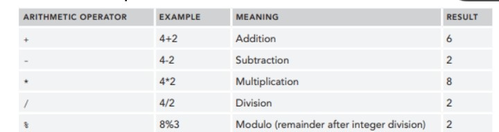
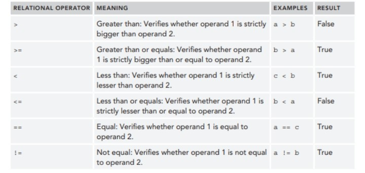
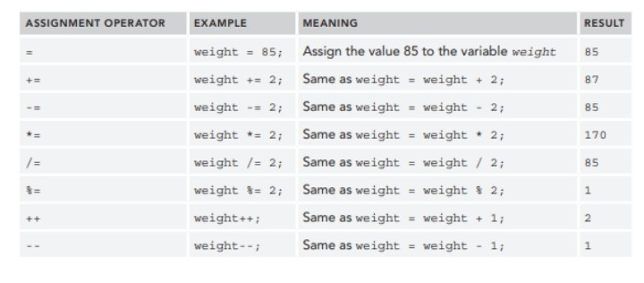
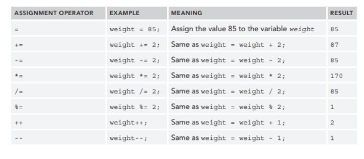

Online Learning Modules
Module 1
Operators
MODULE 3
BASIC OPERATORS
Operators
Perform data manipulations on one or more input variables (called operands). For example, in the
expression 2+3, the operands are 2 and 3, and the operator is +. In terms of the number of operands, a
distinction can be made among unary operators (one operand), binary operators (two operands), and ternary
operators (three operands). In terms of the operations performed, a distinction can be made among the
following:
❖ Arithmetic operators
❖ Relational operators
❖ Logical operators
❖ Assignment operators
Arithmetic Operators
Arithmetic operators perform basic mathematical operations on numerical values. The most popular ones are
listed in Table 3.1.
Table 3.1: Arithmetic Operators

Relational Operators
Relational operators are usually binary operators. They check the relationship between two operands that are
usually numbers or at least can be represented as numbers. They typically return a Boolean value. Consider the
following variables:
➢ int a=4;
➢ int b=9;
➢ int c=4;
Table 3.2 illustrates the relational operators that can be used in Java.11

Logical operators
A logical operator returns a Boolean result based on the Boolean result of one or more expressions. For this
reason, they may also be called Boolean operators. Logical or Boolean operators are always evaluated from
left to right. Consider, for example, the following expressions and their Boolean results. Table 3.3 then illustrates
the evaluation of the logical operators that can be used in Java on these expressions.
➢ A: 3 > 2 (True)
➢ B: 2 < 1 (False)
 Assignment Operators
The assignment operator assigns values to a variable. In previous examples, you read about the (=) operator,
which assigns a value to a variable. Table 3.4 lists some important assignment operators.
Table 3.2 Assignment Operator

Assignment Operators
The assignment operator assigns values to a variable. In previous examples, you read about the (=) operator,
which assigns a value to a variable. Table 3.4 lists some important assignment operators.
Table 3.2 Assignment Operator
